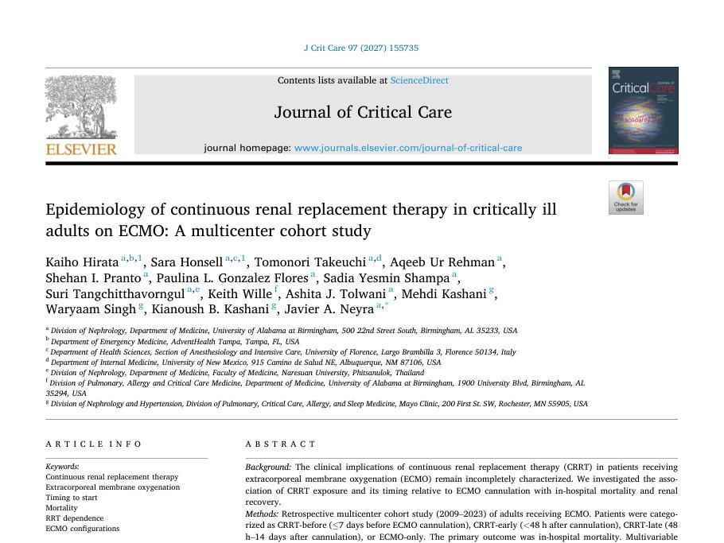
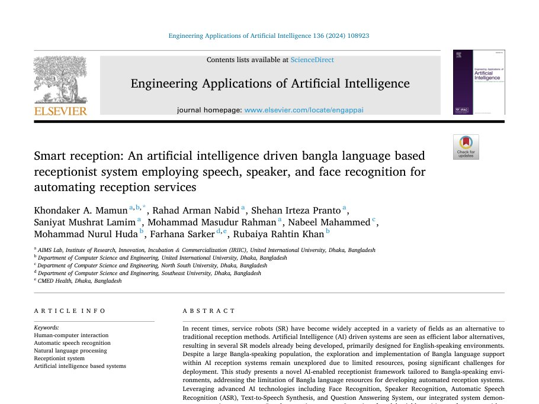
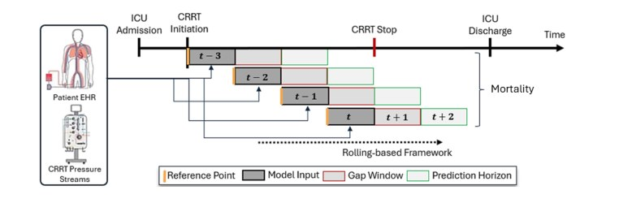
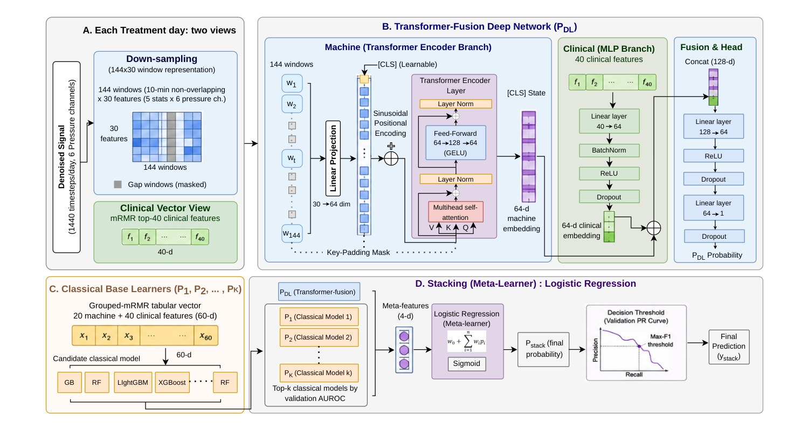
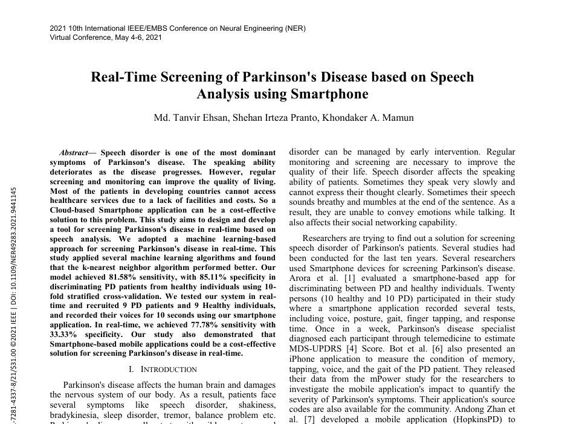
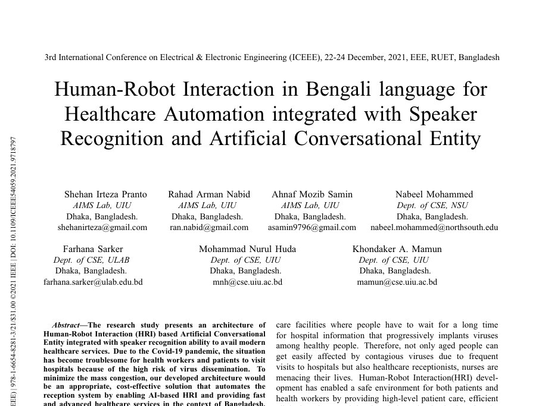
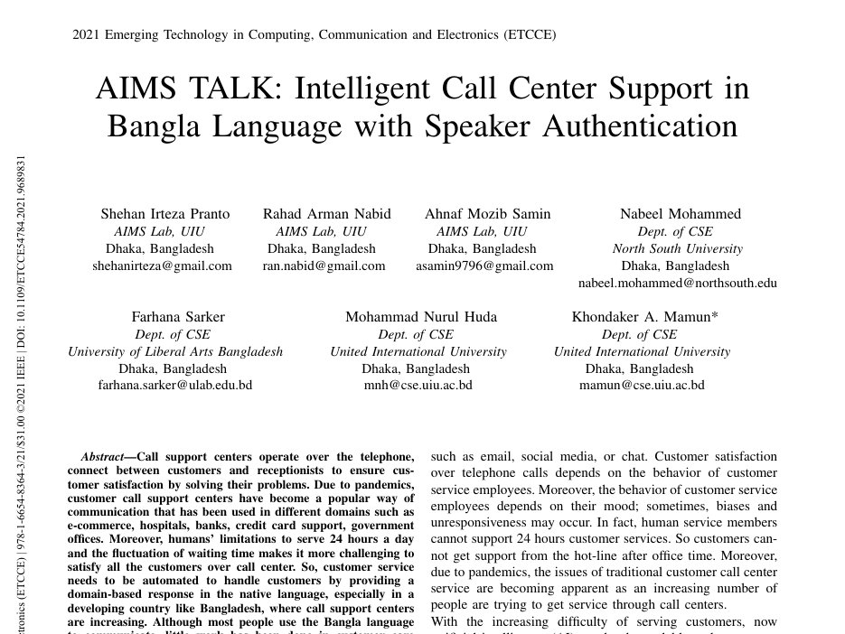
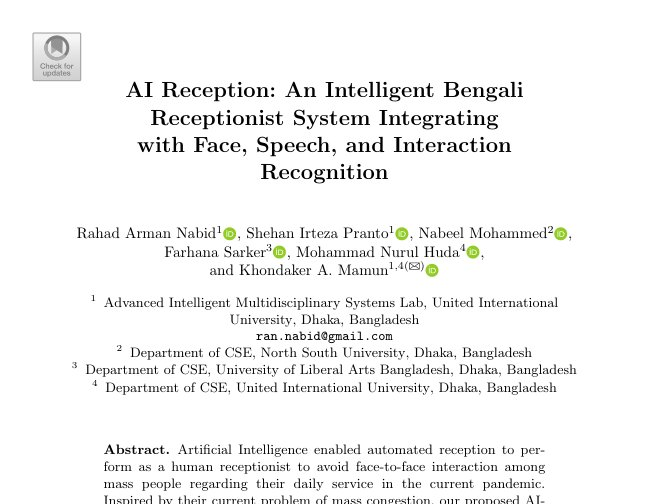
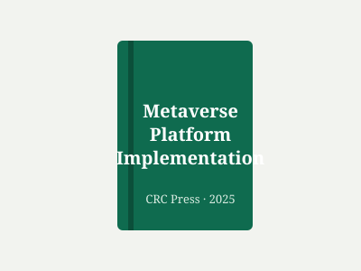

Artificial Intelligence in Acute Kidney Injury and Continuous Renal Replacement Therapy Accepted
Advances in Kidney Disease and Health, accepted, 2026. Review article.
Journal papers, peer-reviewed conference papers, conference abstracts and a book chapter. Full list on Google Scholar. * equal contribution
Artificial Intelligence in Acute Kidney Injury and Continuous Renal Replacement Therapy Accepted
Advances in Kidney Disease and Health, accepted, 2026. Review article.


Epidemiology of Continuous Renal Replacement Therapy in Critically Ill Adults on ECMO: A Multicenter Cohort Study
Journal of Critical Care, vol. 97, 155735, 2027.


Development and External Validation of a Machine Learning Model to Predict 7-Day CRRT-Free Survival in Patients on Continuous Renal Replacement Therapy Under review
Intensive Care Medicine, under review, 2026.





CRRT Machine Pressure Waveforms Improve Day-Wise ICU Mortality Prediction in Patients With AKI Oral
ASN Kidney Week 2026, Denver, CO. Oral presentation, session "Artificial Intelligence in Kidney Care".
Do CRRT Machine Signals Add Prognostic Value? A Multimodal Machine Learning Approach to ICU Mortality Prediction 2nd Place Poster Award
UAB Annual Translational and Transformative Informatics Symposium (ATTIS), Birmingham, AL, 2026. Flash talk and poster.
Temporal Machine-Learning Model for Predicting Seven-Day RRT-Free Survival in Critically Ill Patients on Continuous Renal Replacement Therapy Oral
J Am Soc Nephrol 36(10S), FR-OR010. ASN Kidney Week 2025, Houston, TX.
Metabolic Safety of Regional Citrate Anticoagulation During CRRT: A Target Trial Emulation
J Am Soc Nephrol 36(10S), FR-PO0104. ASN Kidney Week 2025, Houston, TX.
AKI Etiology and In-Hospital Mortality by Discharge Diagnosis Category
ASN Kidney Week 2025, Houston, TX. Poster.
Enhancing Prognostic Accuracy in AKI: A Systematic Data Quality Assurance Framework for CRRT Machine Data
UAB Annual Translational and Transformative Informatics Symposium (ATTIS), Birmingham, AL, 2025. Flash talk and poster.

Security and Privacy for AR/VR Spaces
In Metaverse Platform Implementation, CRC Press, pp. 164–182, 2025.